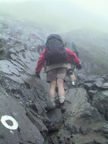
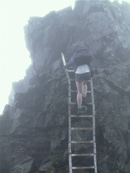
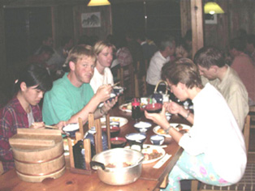
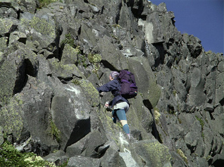
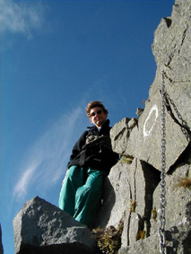
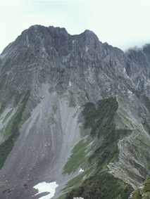
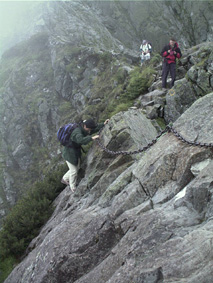
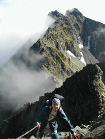
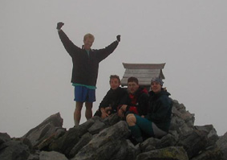
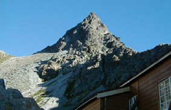

Survival in the Kita-Alps
Text by Jens Foerster
Photos by Jens Foerster and Mark Allen
It sounded all so tempting: Long ago Paul announced the North
Alps-trip, people who did it last year where enthusiastic about
it, Victor's "News Flash from Nagano" even made the
the title page of the Alien Times.... but nobody dared to call
this trip what it really was: A survival trip designed to push
you to and beyond your limits. No, it was just announced as a
"three day hike", demanding but possible, basically
'no problems', a piece of cake.
Okay, so Paul wrote in his e-mails announcing the hike something
about that "[it] should only be attempted by experienced,
fit and properly equipped people. [This is] the most technically
difficult and hardest walk this club has organized", and
shortly later urged everybody to get an insurance covering the
evacuation by helicopter from the mountain in case of an accident.
In retrospect, that should have warned us, but at this time we
were already hooked and could not care less.
So we met on Thursday night at the usual place (what a strange
feeling to meet in the darkness at the 7-eleven and realize that
it is not early morning!) and drove to the station and from there
to Shinjuku. There Elena joined us (so far no problems) and we
were complete: the Australians, Emma, and Ascelin, the Brits,
Mark and Paul, the Japanese Connection Tadashi and Chisa, the
German Gang Jens and Andreas (yes! THE Andreas! All the way from
Europe just for this trip! Well, maybe Mei also played some kind
of role...) and The Rest , Elena and Mei. Too bad Franz was forced
to stay behind by unpleasant happenings at his workplace. Apart
from Andreas no-one knew what was waiting ahead for us, and he
still made it sound so easy.
The trip through the night to our two starting points was
uneventful, no missed connections, not even crowded trains or
busses! Surprising. Apparently quite a difference to last year.
So early in the morning on Friday we started the tour, Paul, Tadashi,
Chisa and Ascelin from Nakabusa Onsen, the others from Kamakochi.
For the "Kamakochi"-group, the trip started with
an 'easy slope' to the first hut. Okay, easy for a mountain goat
maybe, which kind of got us scared for the second part of the
ascent. But nobody thought of giving up (yet). The second part
indeed turned out to be harder, not too difficult, but steep,
therefore tiring. Well, if you want to increase your altitude
by 1.6 kilometers in one day, you have to climb seriously somewhere.
To really get us in the "survival" mood Mother Nature
decided to help us by supplying a generous amount of rain on that
part of the trail. That sparked a brief
moment of panic in the group. Due to the nice, dry (meaning not-rainy,
of course not not-humid) and sunny weather in Tsukuba the last
couple of weeks nobody really prepared for this! Frantically everybody
digged to the lowest, most far away places in the backpack where
the waterproofs were, tried to get clothes etc. in plastic bags,
seal backpacks and more. Experienced
Andreas had a rain cover for his backpack, but due to a leaking
water bottle in his pack all our stuff felt similar at the end
of the day: Wet.
Climbing in the rain did not make us singing in the rain,
au contraire. Jens got reminded why he started disliking hiking
before coming to Japan. And Mark remembered one of the last E-Mails
Paul sent in which he wrote: "The weather is still looking
perfect. This could, potentially, be the first TWMC walk without
rain in a long time!" and grumbled "I'm gonna make 'em
eat them words!". Coming from him I was glad Paul had decided
to join the other group. Maybe his knee saved him from greater
trouble here... Maybe not to discourage us too early and make
us turn back the rain stopped after about two hours. An absolutely
unnecessary consideration from Mother Nature because none of us
considered going DOWN the mountain in these wet conditions. So
the only way to go was up, and finally we reached the Okuhodakadake
peak. What a lovely view: Wet rocks and fog everywhere.
To reach the hut all that remained was an almost vertical
descent. Question: Why do they always build the huts in such places
that you have to either an very steep descent or ascent on the
last couple of meters to reach the hut? Maybe it is to make sure
that one is just happy to be there and to gladly ignore the miserable
quality of the hut. Well,
in the case of the Hotakadake-Sanso that was unnecessary, as this
was the best mountain hut most of us had ever encountered. Quite
new and spacious, good food, even tatamis on the floors of the
sleeping room. Our group of 6 was placed in one room, and as apparently
no Japanese was willing to take the risk to sleep in the same
room as these strange foreigners we had the room for ourselves
and actually had one futon per person. That's pure luxury, to
sleep without fighting for blankets and to have space to turn!
So we really got a good nights sleep (the exhaustion helped of
course), and the question who snored that night (Emma? Mark? Jens?)
will forever be a mystery as everybody noticed it but nobody bothered
to really wake up and find out.
By the way, the rain caused us to also train another aspect
of survival: List your options and find alternatives. Andreas
simply refused to do the walk tomorrow in the rain. Rightfully
so, as we agreed later, but at that point his point of view sparked
a fierce discussion and half the night was spent arguing, proposing,
rejecting, trying this, looking for that,... (Honesty Mode to
Full) Actually it took about one look at the map and one minute
to agree on all the few alternatives there were (Honesty Mode
back to Usual).
The next morning breakfast was served at 5:00 AM (yawn!).
We were ready to (climb) rock at 6:00. The weather was okay, no
rain. Our departure was slightly delayed because a helicopter
lowered supplies to the hut and took waste away. Quite a (noisy)
spectacle. For us it also was a bit of a relief. So the helicopter
noise we heard all day yesterday did not mean that they were carrying
injured hikers down from the mountains by the dozen. Actually
Emma fancied the idea of a free helicopter ride until she realized
that they most likely would not allow her to take photos during
the flight.
The next 8 1/2 hour were the "difficult
part". There progressing had nothing to do with hiking, it
was pure rock-climbing. This is probably the reason why there
is a M in TWMC. Everybody could choose generously from a wide
variety of scary situations: A path leading up or down almost
vertically, narrow ridges with sharp drops on both sides, slopes
with loose rocks and gravel, rusty and dented chains and ladders,
rocks with ledges to walk on but too smooth to get any (emergency)
hold with your hands, ... At one point a somewhat larger piece
of rock got loose and slid down a valley. Luckily no path crossed
it anywhere below, as the rock kept moving. It was as if it would
only stop after reaching sea level. We still could hear it going
way after it got too far away to see. Finally there was silence,
and then Emma remarked dryly: "So that's what is going to
happen if any of us should slip". There were no replies.
 The weather was a good mix: Sometimes
sunny, sometimes clouds below, sometimes fog.The last two actually
made survival easier sometimes as one then could not see how far
down those slopes went. The sun and clear air, on the other hand,
gave great views all around. Also, the sun very nicely illuminated
especially the vertical parts of the trail. Sometimes after a
descent we would look back at the rock wall and wondered how we
ever got down there. Astonishing what you can do, especially with
a heavy backpack.
A propos backpack, it was not Andreas who needed stones in
it to slow him down, it was
Mark. Even Elena could not keep up his pace, despite her knee
protectors ("I do not know whether I really need them, but
they look cool!"). Andreas maybe got slowed down by the jet-lag.
Most surprisingly Jens started to slow down considerably. What
was the reason for that? Not enough training before the trip?
Nah... The heavy backpack (with way too much food)? Yes, it has
to be that. That must be it. I'm sensitive to extra weight. Do
you all hear that?! I'm a sensitive guy! (Stop frantically jumping
and shouting for attention) Thanks Emma,
by the way, for staying last in the line and keeping morale up
that way. No offence intended, you never claimed to be fast or
had a reputation of being a "mountain goat". Speaking
of reputations, as Jens was busy demolishing his, Mark was building
one. In the beginning we were not sure wether it was 'mule' or
'Samatarian', but as at the end of the day he was carrying not
only his stuff in his backpack, but also most heavy stuff from
Elena, Jens and Emma I guess finally we tended more to the last.
To reach our final destination, a hut near Yarigatake,
all that was left was a "normal" three-hour mountain
hike. In our condition, it was quite demanding, especially as
the path of course always lead over the mountain tops, not around
them. Why? Well, after a time in Japan one learns never to ask
why, just to accept thing as they are. And then that path was
rocky and uneven everywhere. Not a single meter of flat, even
trail. Not ONE @#$!% meter! No chance to "walk on autopilot",
active survival instincts were needed up to the last second. The
way Andreas remembered details about the trail from last year
helped him now to do a good job in pepptalk: Are we there now?
Almost. And now? Almost! And now? ALMOST. And now? ALMOST!! (A
bit of writer's freedom to simplify here)
When we reached the base of Yarigatake
it was already 17:30 o'clock. Now for the first time the group
split up. Only Jens was sensible enough to think about Paul's
group waiting and worrying, about the dangers of the imminent
sundown, about conserving energy for the hike tomorrow ... and
about his aching muscles.The others all bluntly ignored these
good reasons and thought only about their personal pleasure. So
they climbed the top of 'Yari' while Jens made his heroic, lonely
descent to the hut.
More stumbling than walking he reached the hut after a 12-hour-hike
(must be a TWMC-record!) and Chisa almost fainted when she saw
him. No idea wether it was because of the horribly tired look
on Jens' face or the thought that he might be the only survivor...
Anyhow, after hearing that the others were still alive up there
somewhere she stopped Paul and Tadashi, who were already organizing
a major Search-and-Rescue mission. Or at least made them put it
on hold until after dark the others actually did finally arrive.
This evening and the next morning a lot of damage repairs
were done to knees, foots, legs, burnt skin etc. All part of a
good survival training, and as the TWMC-hikes are all about sharing
most likely everybody used everybody else's stuff (well, almost
then)... Oh yes, the neverending story of Paul's knee of course
got a continuation here: Just meters away from the hut, while
standing still at the side of the path to let others pass Paul
managed somehow to hurt his knee. How does he do it?
The night was not as comfortable as last night, the futons
were too thin, but at least we again had enough space. At some
points we thought that the crew of the hut acted a bit strange
for a Japanese mountain hut crew. But what can you expect from
a hut which is called something like "Take Lives Huette"
or so. Or should we have met the first Japanese who really knew
about irony?...
The next morning Ascelin did what no-one thought anybody would
be crazy enough to do. He climbed back up all the way to Yari
to watch the sunrise. Some people do anything for a good show...
The rest enjoyed breakfast and a clear view all the way to Fuji-san.
So all that was left now was "only" a descent all
the way down to Kamakochi. Sounds simple, but descending over
a rocky path with shifting stones in burning sun (no shadow anywhere)
with no wind was a very effective way to turn everybody's legs
into Jelly. Once down in the valley the walking got easier, the
trail got wider (and more even) and the speed increased. At one
point some of the group actually stopped to take a bath in the
(cold!) river. They surprisingly fast catched up with the rest
of the group, either because the bath had been VERY short or because
they had to run to get warm again (they wouldn't tell). Towards
the end the road became a 'Hiking-Autobahn' with so much day-tourists
that we felt kind of strange with our big backpacks and so.
The way home again went very uneventful. Okay, it was more
crowded than on Friday, but still manageable. A lot of effort
was put into ensuring that everybody got a seating place on every
part of the trip...
But euphoria prevailed: We did it! We passed the North-Alps-Survival-Training!
We were still alive and able to move! We would be able to live
and tell! Of course everybody was already thinking about HOW to
tell about this hike, to make it sound wonderful (it was!) and
easy (it wasn't!) and convince as much people as possible to do
it also (it's sure worth it!)...
Back to the
Home Page